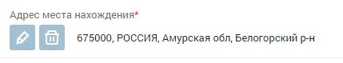
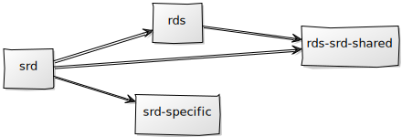
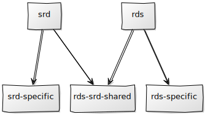

Типичный интерфейс реестра
Типичный интерфейс реестра
Типичный интерфейс реестра
-
Очень сжатые сроки
-
Полное отсутствие опыта в Angular
Основные проблемы
Работа с большими формами
- Различные модели на сервере и клиенте
- Отсутствие типизации реактивных форм
- Управление состоянием контролов
- Валидация
Большие компоненты
- Сложность в поддержке
- Повторное использование почти невозможно
- Дублирование кода
Организация модулей реестров
- Большие бандлы
- Загрузка клиентом неиспользуемой функциональности
- Дублирование кода
Работа с большими формами
Различные модели на сервере и клиенте
{
contacts: [ { idType: number } ]
}
{
phones: magic(contacts),
faxes: magic(contacts),
emails: magic(contacts),
websites: magic(contacts)
}
{
cutAccredScopeChanges: [ { idBasis: number } ],
terminationChanges: [ { idBasis: number } ]
}
{
stateServices: [ { changeTypeId: number } ],
activityControl: [ { changeTypeId: number } ]
}
Работа с большими формами
Отсутствие типизации реактивных форм
ngx-typed-forms
interface ComplexForm {
name: {
first: string;
last: string;
};
age: number;
favoriteDishes: string[];
};
const form = formBuilder.group<ComplexForm>({
name: fb.group({
first: 'Yosuke',
last: 'Kurami'
}),
age: 32,
favoriteDishes: fb.array<string>(
[fb.control('favoriteDish')]
),
});
Работа с большими формами
Управление состоянием контролов
@Injectable()
export class FgisFormBuilder extends FormBuilder {
constructor() {
super();
}
control(
formState: Object,
validator?: ValidatorFn | ValidatorFn[] | null,
asyncValidator?: AsyncValidatorFn | AsyncValidatorFn[] | null
): FormControl {
return new FgisFormControl(
formState,
validator,
asyncValidator
);
}
}
@Injectable()
export class FormFactory {
constructor(private fb: FormBuilder) {
}
makeForm(model: Model): FormGroup {
return this.fb.group({
id: model.id,
name: model.name
});
}
}
Работа с большими формами
Валидация
export function isRequiredProvided(
pathFromRoot: string,
operator: string,
value: any | any[],
key?: string
): ValidatorFn {
// ...code
}
[applicant.person.snils]
createPersonForm(person: Person): FromGroup {
return this.fb.group({
snils: [person.snils, isRequiredProvided('applicant.idType', 'equal', {id: ApplicantType.IP}, 'id')
})
}
Работа с большими формами
Валидация
export function conditionalValidator(conditional: ConditionalFn, validator: ValidatorFn): ValidatorFn {
return (control: AbstractControl) => {
if (conditional()) {
return validator(control)
}
return Validators.nullValidator(control);
}
}
Работа с большими формами
Валидация
function isRequiredSnils(idTypeControl: FormControl): ConditionalFn {
return () => {
const idType = idTypeControl.value && idTypeControl.value.id;
return idType === ApplicantType.IP
}
}
createPersonForm(person: Person): FromGroup {
const group = createPerson(person);
setPersonValidators(group);
return group;
}
private createPerson(person): FormGroup {
const group = this.fb.group({
snils: [person.snils]
});
return group;
}
private setPersonValidators(group): FormGroup {
const form = getRootForm();
const typeCtrl =
form.get('applicant.idType');
group.get('snils').setValidators(
conditionalValidator(
isRequiredSnils(typeCtrl),
Validators.required
)
);
return group;
}
Большие компоненты
Проблемы:
- Сложность в поддержке
- Повторное использование почти невозможно
- Дублирование кода
Решения:
- Выделение целостной функциональности в отдельную структурную единицу (директива, компонент, сервис)
- Предварительное планирование, обсуждение
- Разделение компонентов на умные и глупые
- Настройка линтеров
Большие компоненты
Типы компонентов
Smart / Container
constructor(private store: Store, private router: Router) {
}
Dumb / Presentational
@Input() todo: Todo;
@Output() selected(): EventEmitter<Todo>;
-
Переиспользуемость
-
Тестируемость
-
Независимость от проекта/бизнес-кейса
Большие компоненты
Компонент адреса

Организация модулей реестров
Структура реестра
-
ralпапка реестра
-
table-viewвитрина
-
card-viewпросмотр карточки
-
view-accreditation вкладки формы
-
view-applicant вкладки формы
-
card-view.component.ts контейнер для всей формы
-
card-editредактирование карточки
-
sharedобщее для реестра
-
models
-
constants
-
directives
-
services
-
...
-
ral.module.tsточка сбора всего реестра
-
sharedобщее для всего приложения
-
app.module.ts входная точка приложения
Организация модулей реестров


Организация модулей реестров
Предлагаемая структура
-
apps
-
rds самостоятельное приложение
-
rds-e2e интеграционное тестирование
-
srd
-
srd-e2e
-
libs
-
rdsдля группировки
-
filters
-
feature-filters библиотека
-
rds-feature-filters.module.ts
-
index.ts публичное API библиотеки
-
ui-filters
-
data-access-filters
-
srd
-
shared
-
rds-srd
-
feature-products
-
ui-products
-
data-access-auth
-
util-formatting
-
Независимая сборка приложений
-
Ленивая загрузка (preloadingStategy)
-
Легко переиспользовать
-
Удобная навигация
-
Удобная настройка линтеров
Спасибо за внимание
-
ngx-typed-forms
Обертка для типизации реактивных форм
-
Smart vs Presentational Components
Статья из серии Архитектура Ангуляра
-
Nrwl.io
Набор инструментов для enterprise Angular приложений